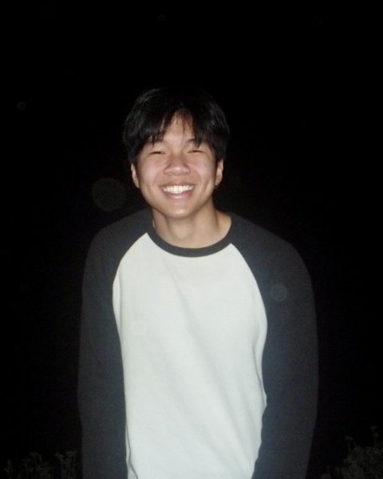

I'm an Electrical Engineering student at Cal Poly San Luis Obispo with a minor in Computer Science. My work spans RTL design, computer architecture, verification, and applied AI, bridging hardware and software at the systems level.
I'm motivated to pursue opportunities in digital design, verification, embedded systems, and semiconductor engineering. I'm especially interested in processor microarchitecture and hardware-software co-design.
Outside of class, I'm in Cal Poly's CARP research group working on GPU architecture, I do research with Prof. Andrew Danowitz on LLM inference and KV-cache memory, and I TA for CPE 2300 and 2301.
TA for the CPE 2300 lecture sections and the CPE 2301 lab sections.
Supported a biweekly lab section of 20+ students on Python fundamentals: lists, dictionaries, functions, control structures, I/O, and unit testing. Also responsible for grading.
Studying how big the KV cache really gets during LLM inference and whether similar prompts end up in similar places inside the model. Details are on the monitor under current projects.
Working on GAR GPU development with the group. My LFGPU fork grew out of this.
Worked on modular data centers and AI infrastructure. My report argued that modular data centers need extending, not replacing, to handle AI workloads, with energy storage acting as the control layer that isolates bursty AI loads from the grid.
A simulation-first RISC-V processor built around a seven-stage in-order core in SystemVerilog. It implements RV32IMAC plus Zicsr/Zifencei, with a two-slot dual-issue front end, branch prediction (BHT, BTB, RAS), a two-level data cache hierarchy, a store buffer, atomics (LR/SC, AMOs), compressed instruction expansion, and full CSR, trap and timer-interrupt handling.
It evolved from a 5-stage baseline, with each addition tracked against measurable performance. Software bring-up includes booting FreeRTOS and running CoreMark in simulation.
TODO: I've been building an out-of-order core in the same repo. Waiting on Long's wording for what it does and where it's at.
After that, the plan is to take it through a backend flow, RTL to layout, as a personal project.
My fork of Cal Poly CARP's GAR GPU (itself built on the open-source tiny-gpu) to learn GPU architecture hands-on. The goal is to migrate the whole ISA from a custom encoding to standard RV32IM, so the GPU can run real compiler-generated kernels and target the Vortex RISC-V GPU compiler.
When an LLM generates text it keeps a KV cache, and that cache eats a lot of memory. I'm looking at how big it actually gets and whether there's structure in it we could take advantage of.
Still early, so no big conclusions yet.
We're implementing the multi-tenant systolic-array accelerator from Reshadi and Gregg (PDP 2023) in SystemVerilog and running it on a Zybo Z7-20.
TODO: Waiting on Long's wording for what he owns on the team.
A tool a TA can use for any class. While students wait for help, it walks them through problems step by step with an interactive interface instead of a plain text chat. It also tracks which topics students struggle with, so the TA knows where to focus.
It comes from my experience as a TA in intro Python and digital design labs, where there are never quite enough TAs to go around.
An RTL implementation of a RISC-V datapath, from a multicycle baseline to a 5-stage pipeline with hazard detection and forwarding. Verified in Vivado simulation and deployed on a Basys3 FPGA.
An agent that learns under a fixed memory budget by compressing repeated facts into first-order logic rules (Z3), then answers queries about facts it never stored. Benchmarked against three baseline agents on 8 datasets.
A memory-based logic game on a Basys3 FPGA that records, stores and validates input sequences across difficulty levels, with optimized FSMs, D flip-flop storage and seven-segment feedback.
A custom PCB control system for an automated Rube Goldberg machine: schematic capture, layout, component selection, soldering, and bring-up with sensors and actuators.
An audio digital-to-analog converter circuit, focused on signal integrity, filter design and frequency response, verified in SPICE before hardware.
TODO (draft, confirm): A summer course in modern C++ for embedded work, from memory layout and pointers through OOP, templates, unit testing and design patterns, wrapped up with an IoT robot mini project and a capstone.
Contributed to GAR GPU development.
Part of the TCCA, TCuARCH, CASS, and Computer Society communities.
TODO: Waiting on Long for leadership roles (title, organization, dates, one line on what he led).
Wave propagation, transmission lines, Maxwell's equations, RF fundamentals.
Electric machines, transformers, motors, generators, power conversion.
Continuous and discrete-time systems, Fourier and Laplace transforms, convolution.
Diodes, BJTs, MOSFETs, amplifier circuits, biasing.
Independent research and advanced project work.
Processor design, pipelining, memory hierarchy, performance analysis.
Digital logic design, datapath construction, low-level assembly.
Advanced RTL design, FSMs, synthesis, FPGA implementation.
Processor microarchitecture, studied through research papers.
Search, planning, MDPs, Bayesian networks, machine learning fundamentals.
C, memory management, Unix system calls, processes, concurrency.
Algorithms, complexity analysis, trees, graphs, sorting, hashing.
Full-stack web development, APIs, frameworks, engineering practices.
Probability theory, random variables, distributions, stochastic processes.